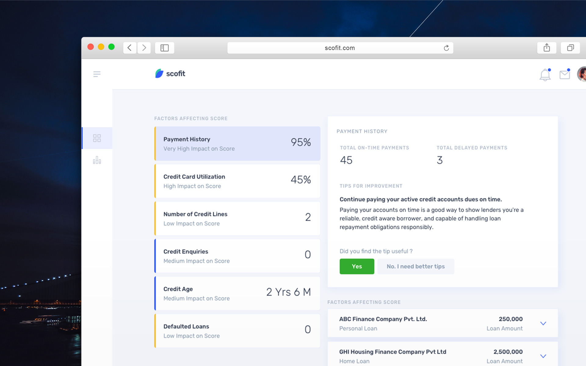
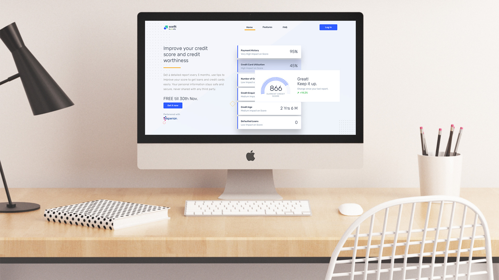
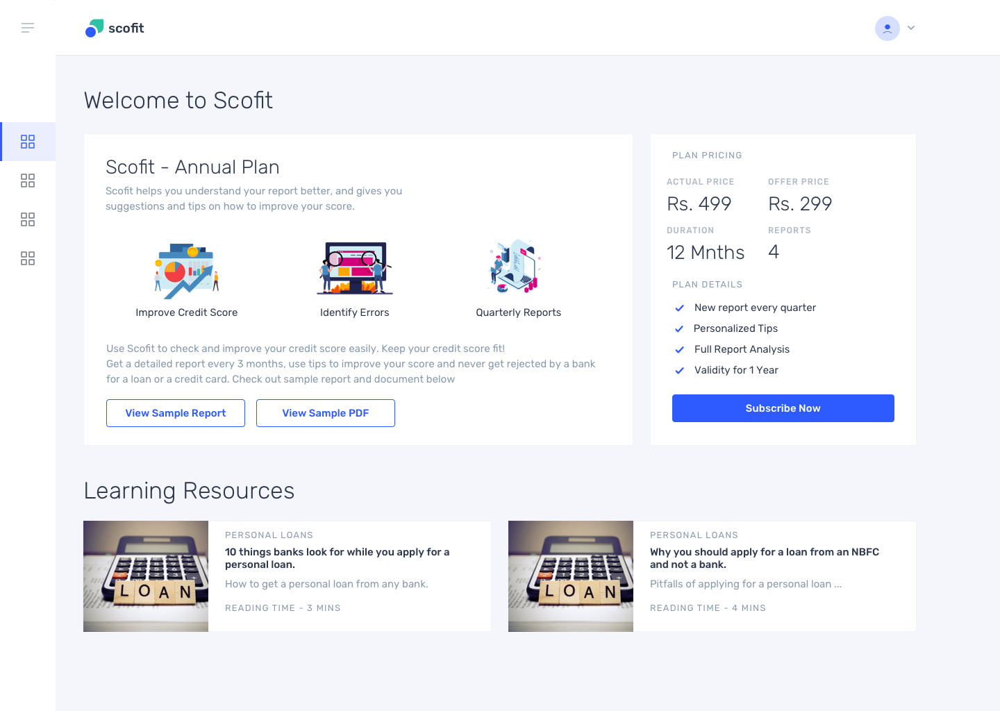
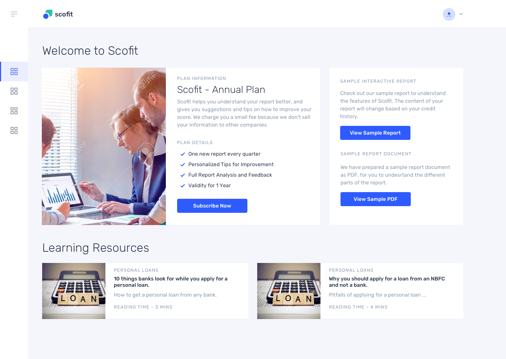
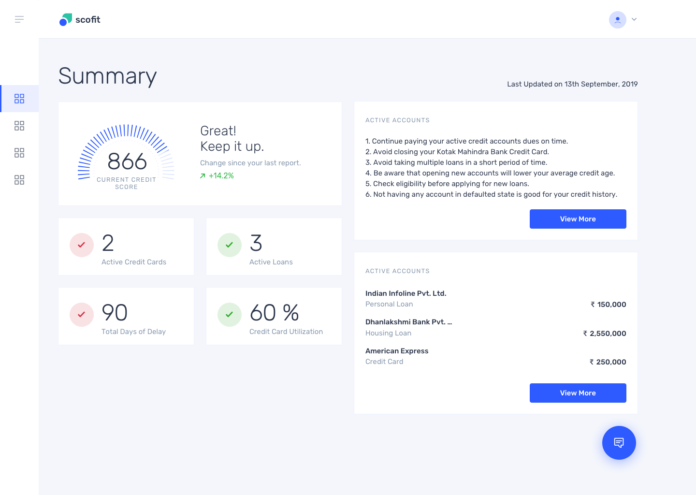
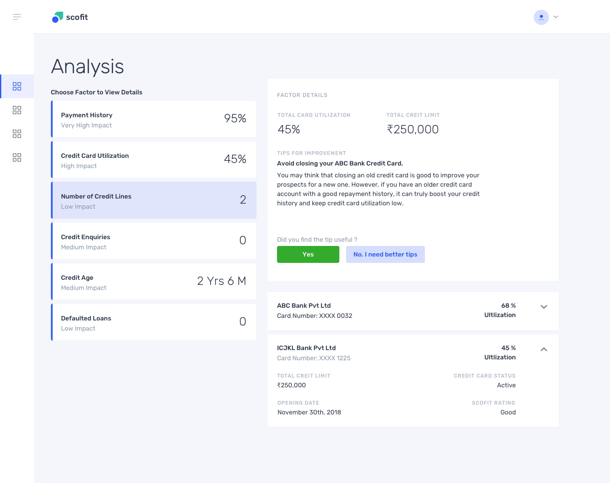

Designing a credit report analysis and reporting service.
Designed the landing page and the dashboard for providing insights into the users credit report. Conducted split testing to improve conversion, reduce drop-off and improve retention.
About the Product
Scofit is an online service providing a personalized credit report analysis and reports. Unlike its competitors who offer generic solutions and suggestions, Scofit personalizes its suggestion for each user, based on their credit history and spending patterns.
Purpose of the Project
The purpose of the project was to plan and design the process flow and the user experience of the product to create an initial version with minimal features, which would be offered as a premium service to our existing customer base. The project went through several iterations and experiments, to understand the users’ needs and expectation, and to formulate an optimized user journey
My Role in the Project
During the project, I took up the responsibility of designing the process flow, the key feature of the product. My primary responsibility was to design the layouts, along with the wireframes, and prototypes. I also helped the team conduct several experiments around user expectation, through surveys and A/B testing.
Overview
About the Company
As a Non-Banking Financial Company that lends small ticket personal loans, we tend to have tens of thousands of applications every month. A key part of the loan application process is the Credit Report Analysis, which is a key decision-maker in the applicants’ loan being accepted or rejected. Over 2 years we gathered our observations about what would constitute as a poor credit history and looked for opportunities to educate people about improving it.
Defining the Problem Space
Analyzing over a million reports, we understood that there is a lack of basic financial education among the people, which seemed a good space to start our exploration. We aimed to provide them with basic to advanced insights into their credit history, and the actions they can take to improve it for a better credit rating.
User Research
Conducting primary research
We started our user research by conducting an online survey among our existing user base, whose loan application had to be rejected due to poor credit history. This included around 10,000 users spread over five cities in India, from different backgrounds.
Conclusions of primary and secondary research
Around 70% of the interviewed were willing to subscribe to a paid plan for quarterly reports. 45% of the people
wanted personalized suggestions on how to keep a healthy score. 65% wanted to get a deeper insight into their
report and understand the factors
From our market research studies, we were able to understand, that a huge proportion of our user base,
were willing to subscribe towards a service which offered them quarterly reports about their Credit History.
Almost half of them highlighted that they wanted the tips and suggestions to be personalized to their report.
Organizing the Layouts
Summary - Overview of Report
The Summary page gives the user a quick overview of the different factors in their report. Considering the lack of real estate on a mobile view, we restricted the content to a few key aspects - the current score and its change from the previous report if available; active loan accounts and credit cards; and highlights of the top factors reducing your Credit Score

Analysis of Factors
The summary page gives the user a quick overview of the different factors in their report. Considering the lack of real estate on a mobile view, we restricted the content to a few key aspects - the current score and its change from the previous report if available; active loan accounts and credit cards; and highlights of the top factors reducing your Credit Score
Design Challenges and Constraints
Designing for multiple states.
One of the major constraints was to design for different states if the dashboard. Based on how much, or how elaborate the data of the user was, we had to design for 3 different states.
1. Credit Age is lesser than 6 months
The User was New To Credit, and had no credit history or their history is recent enough to not be assigned a score - the dashboard of this user would barely have enough information for metrics and would have to rely on generic tips and suggestions on how to achieve a good score.
2. Credit Age is between 6 months to a Year
User has a credit history of more than 6 months, but less than a year - For such users, we designed a minimal dashboard with details on current loans and credit cards, with useful tips on payments to maintain a good score, or improve from a poor one.
3. Credit Age is more than a Year
TUser has a credit history of more than a year - this user would have the full-feature version of the dashboard. Most of our users belonged to this category.
Feedback on the Content and Suggestions
The success of the product depended entirely on how useful the user found the content to be. To validate the effectiveness of this, we placed feedback forms, and buttons to upvote/ downvote the suggestions that we provided them.
High Fidelity Prototypes
Based on our study and findings, we designed the initial prototype of the app. The designs went through several iterations through this period and continue to be improved with constant feedback from our customers.
    